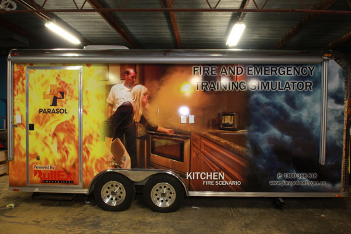
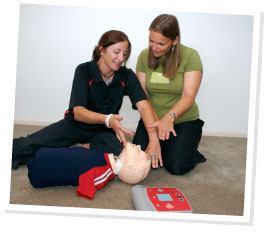

OHS Training and First Aid Training Courses
Providing a full range of first aid training including, Occupational First Aid, CPR AED, Apply First Aid Refresher through to Remote Area First Aid and Advanced First Aid, PARASOL also provides vocational training for those seeking a career in the Ambulance/Paramedic field with the Certificate IV Emergency Medical Technician (EMT).
We also provide Advanced Life Support training, consultancy and equipment. PARASOL offers national or local solutions to the highest standards in the industry.
From major corporations to individual business needs, PARASOL can meet your requirements.
OHS Training courses range from Construction safety and Induction through to Health and Safety Representatives, and include vocational qualification courses.
Other OHS services we provide include tailored training packages, ergonomic assessments, safety audits and vocational qualifications ranging from Certificate III Occupational Health & Safety through Certificate IV to Diploma OHS.
Contact PARASOL on
1300 366 818 or email enquiries@parasolemt.com.au
About
PARASOL was established in Canberra in 1996 by two ambulance intensive care paramedics, who identified a need in the market to provide high-quality, flexible first aid and OHS training solutions for major corporate and government organisations in Australia.
From the outset, our goal was to develop and deliver training solutions that exceeded our customer's expectations.
As demand for our first aid and OHS services grew, so did our presence in Australia's capital cities and major rural centres. An established network of 300 qualified training professionals also guarantees coverage in metropolitan, regional and remote areas.
Currently training 70,000 students annually, PARASOL is committed to being Australia's leading commercial provider of OHS, first aid and advance life support training and products such as our first aid kits.
Our People
PARASOL prides itself on the quality of our people. Our first aid trainers are qualified paramedics, registered nurses or similarly qualified emergency personnel. We never use volunteers or inexperienced personnel.
To comply with our meticulous trainer selection, every trainer in our team must have:
 In excess of three years' experience as a qualified ambulance officer, paramedic, registered nurse or emergency services equivalent.
In excess of three years' experience as a qualified ambulance officer, paramedic, registered nurse or emergency services equivalent.
 A Certificate IV Assessment and Workplace Training.
A Certificate IV Assessment and Workplace Training.
 Direct industry experience in pre-hospital care or emergency medicine.
Direct industry experience in pre-hospital care or emergency medicine.
 Demonstrated expertise in presenting first aid training to a range of client types.
Demonstrated expertise in presenting first aid training to a range of client types.
Our Clients
As Australia's premier national commercial training organisation, our client list reads like a veritable "Who's Who" of government institutions, major corporations and smaller organisations, as well as members of the general public. Currently training over 70,000 Australians nationally per annum, our students come from all walks of life and all geographical areas.
For more detailed information or testimonials contact us.
FAQs
Where did the name PARASOL EMT come from?
A combination of Paramedical Solutions & Emergency Medical Training, two companies that merged to form PARASOL EMT in 1996.
Are your first aid and OH&S courses accredited?
Yes, we hold National, Commonwealth, State and Territory approvals or accreditations in a variety of health and safety studies. See our listing on www.ntis.gov.au/?/rto/2551
Do your first aid kits have government approval?
In order to build first aid kits you must first submit your kits to TGA (Therapeutic Goods Administration) whereby the kit will be given an ARTG number.
The listing process requires that you follow guidelines on the contents, labelling and packaging of kits that are set down by TGA.
If a first aid kit supplier who builds their own kits does not abide by this process, then the kit may not meet requirements and/or legislative requirements.
Where do you conduct courses?
We have offices in Adelaide, Albury, Brisbane, Caloundra, Canberra, Mackay, Melbourne, Mildura, Sydney, Tamworth and Wagga Wagga and an extensive national trainer network located in many other regional centres. We conduct on-site training for groups of 10 or more at our client's own premises.
What sort of clothes should I wear when I attend a training session?
Comfortable casual clothing is recommended in order to cope with practical activities.
Is parking available at your venues?
As we have many venues across Australia, you will need to check the parking arrangements for your intended venue. Please refer to the the details on our Contact Us page.
What are the payment options?
Please discuss payment options with your co-ordinator. Due to the high demand for places in our courses, you need to pay prior to the commencement of the training to confirm your place on the course. You will receive a confirmation letter once you have paid.
In general cancellation fees may apply. However you may be able to transfer to another training course.
I have special needs; can I still do first aid training?
Depending on the type of need, you can still participate in first aid training. We will do everything possible to meet individual needs. Please advise us of your requirements at the time of booking.
My certificate has just expired; can I enrol in a re-certification course?
No. You must hold in date certification to be able to enrol in a re-certification or refresher course. This applies if your certificate expired 1 week or 1 year ago. Please ensure that you re-certify before your certificate expires.
How do I enrol in one of your courses?
Please contact your nearest office using the details on our contacts page or use the query form.
How long are courses accredited for?
This will vary depending on the course whether it be for first aid or OH&S etc. For more specific information, please refer to the individual course outlines on the Training pages.
Our Locations
Visit our website to check for the most up-to-date locations.
www.parasolemt.com.au/our-locations